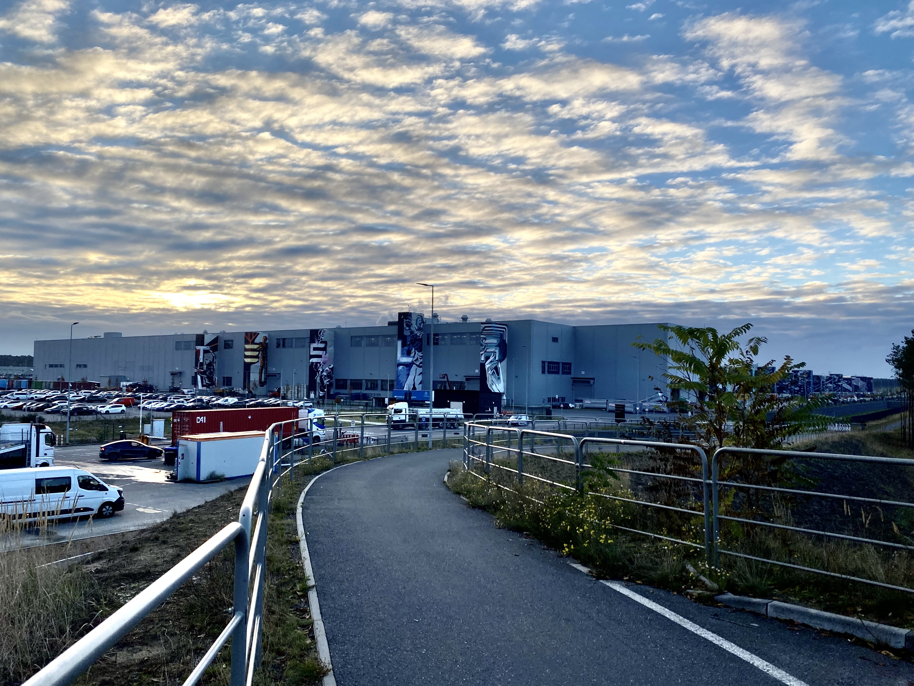
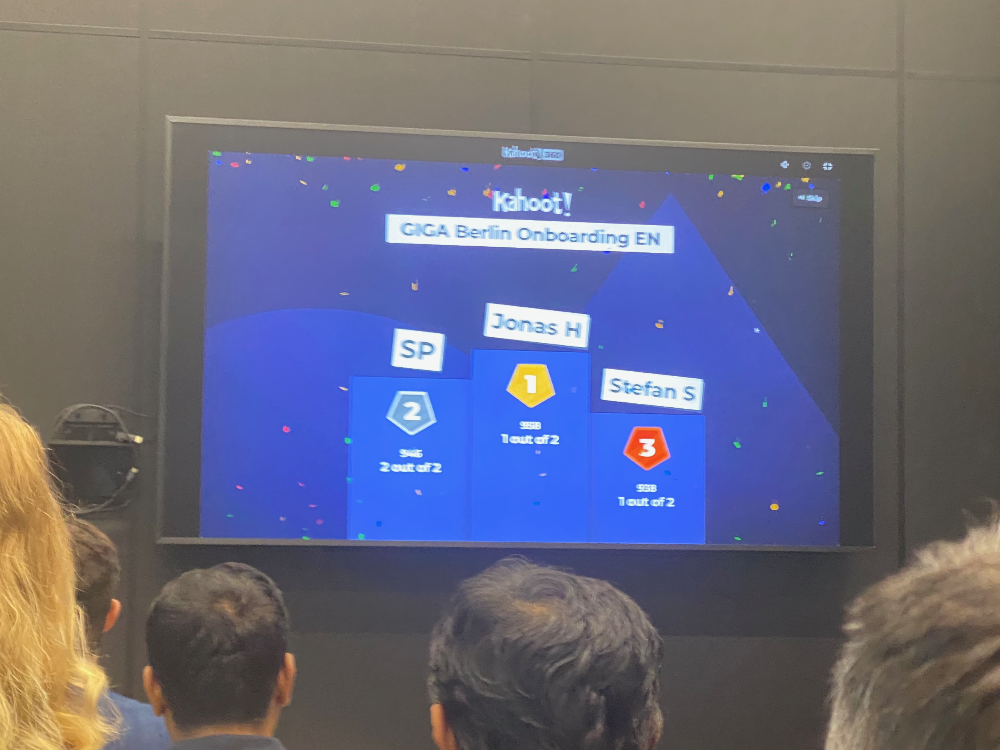
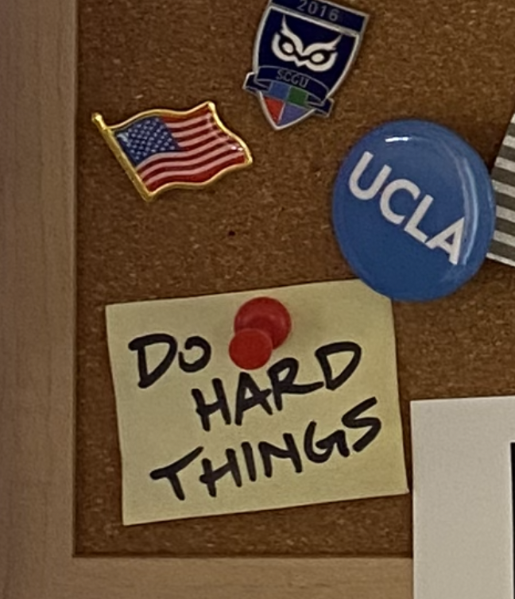

Gigafactory Berlin-Brandenburg is far. From everything. I woke up before the sun, donned my business attire, and took the S3 to its terminal station, Erkner, before taking a bus to its terminal station. Out the bus window, I watched the sun crest the horizon, highlighting the murals that span the huge columns of an enormous building. On each of the five columns, a letter: T E S L A.

I waited in line, took a photo for my badge, received my work boots, and filtered to the meeting room for English-speaking orientation. Over a hundred seats. I wondered, do they really hire this many twice a month? I sat near the front and made small talk with a nice Polish guy. Soon, a nearby kid from Italy joined in.
Then, a tall 20-something walks up and asks in a British accent: “Hey, you’re Jonas, right?” I just about jumped out of my seat in surprise. “I’m Stefan, I recognized you from your profile photo.” A few months back, I’d asked my recruiter to put me in touch with other new hires, and she’d given me the contact of another Associate Mechanical Engineer. He was from Estonia. Studied in London. We texted a few lines, but hadn’t spoken since. Somehow, he clocked me immediately.
Soon, a peppy voice garnered our attention from the front. “Hey team, we’re going to get started in just a second!” Her American accent washed a wave of relief over me. You don’t realize you miss it until you hear it after so long. We began with a Kahoot quiz, with basic fun facts and the like. Brought me back to my glory days in the high school classroom. At the end, Stefan appeared on the podium in 2nd place! And then, 1st place appeared on screen: Jonas H. Unbelievably, I had bested one hundred twenty others. And yes, I will be bringing up this victory in my first performance review.

The rest of orientation was regular corporate presentations about safety and quality and yada-yada. I honestly expected better from the company whose CEO once declared “No big meetings!” After work, I journeyed toward the city center to the Mecca of Germany: IKEA.
After feeling so exploited by Woolworth the previous day, I experienced an immense relief to be surrounded by a brand that I trust to provide the best quality for the price you pay. A place where I could shop economically without feeling poor. I treated myself to a meatball dinner. As I left the blue and yellow oasis, I’m not too proud to admit that I found myself getting teary eyed. I’d taken one small step to making my apartment feel livable.
In recent years, I’ve begun using mottos to help prioritize decision-making. For the past year or two, I kept telling myself to “Do Hard Things.” In my early days in Berlin, I added another. “Surviving Not Thriving.” I needed to start with the basics, without letting my mind spiral into all the imperfections of my current state.

That night, I met my second roommate, Amber, a very nice Pakistani woman, maybe 50 years old. She showed me how to turn the shower on. Bless.
If you read the prologue, you’ll recall my extended kvetching about the engineering office being in Friedrichshain. The first week, however, was entirely at the Gigafactory way out east, technically in the German state of Brandenburg, not Berlin. After finishing “big meeting”-style orientation, us engineers had 3 days assigned to working on the assembly line (I actually missed one of the days for Yom Kippur). That meant arriving at the factory at 6:15 in the morning and jumping into challenging physical labor with no preparation. Truthfully, I was excited to get the experience.
Fortunately, during orientation, I met some new hires from the New Grad Rotational program. One of them, a super tall, super nice Dutch kid named Ian, drove me to the factory on my assembly line days, meaning I got to wake up at 5AM instead of 4AM. For my first factory shift, I speed-walked through the factory before finally finding the right zone. I asked the Lead to join in. One obstacle: most line workers speak two or three languages, but rarely is one of them English. The Lead called out to his workers in German until he found the one operator who spoke English.
A young man with a neatly trimmed beard, wavy hair, and a baseball cap introduced himself in perfect American English. “I’m Al Mustafa,” he smiled. “My friends call me Musti.” He took me to one of the assembly stations and took me through the motions. I learned he came from Sudan, studied in the UAE, and came to Germany seeking EU citizenship. Every 30 minutes, the line workers shifted down 1 station. At every station, Musti guided me as I struggled with the fine motor skills. Along the line, the other workers pantomimed advice and lended me help as I slowed their expert timing. My clumsy fingers aside, the energetic music, supportive team, and conversation with Musti made my first time on the line really quite fun.
My second day of assembly surfaced new challenges. I joined a different section of the assembly, handling a more complex subsystem, with no Musti to help. The metal frames were heavy, the pushpins hurt my fingers to install, and the bolts were installed so inconveniently I could hardly reach the right spot. Plus, time was much more limited. The high-strung team was much less forgiving. My struggle on Day 2 let me know first-hand that us engineers have plenty room for improvement with our designs.
Outside of work, I began to find footing. I cleaned up the kitchen and bedroom, left gross by the prior tenant. I started to learn the complex German recycling system (5 categories!). I made a better-planned IKEA trip. I signed up for a German cell plan, which allowed me to register for a German bank account. I went to the Bürgeramt (citizens’ office) to receive my Anmeldung (registration). I am officially a resident of Berlin! They can’t kick me out now.
My new number also meant I could sign up for NextBike, a bike rental service (like LimeBike). Tesla covers NextBike trips up to 1 hour, which is the best benefit at the company by far. My first weekend, I immediately started cycling between places. After not owning a bike for years, I felt like I was re-discovering the joy of biking.
Alongside NextBike, I started to explore the German transit system. Very nice public transport! At least when the trains aren’t canceled or delayed. And when my phone doesn’t die. But I’ve only been stranded two or three times. Regardless, I managed to check out some museums and flea markets (“flohmarkt”), pillars of a Berlin weekend.
The next Friday, I actually hung out with my coworkers outside of work for the first time. Instead of a bar or pub, it’s typical in Berlin to hang outside of a Späti (convenience store) and have beers while watching passerby. I stuck to my usual water and carrots. Stefan, who has the exact same position as myself, was there, as well as several Rotational Program folks who will come up again soon: Ian, the Dutchman on Battery team. The two Spaniards, Julio from Passive Safety and Maria from Interiors. Plus Nico, an Italian from Closures. Last-but-not-least, a native Berliner working with me on the Seats team, Jonas (pronounced Yo-nass)! I call him Jonas #1 because he joined two weeks before me.